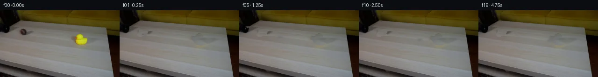

![首帧]()

Round 00
2026-11-05T00:05:31.576031+00:00像素候选变化代码 +349/−0inspection 更新
pixels bdb9a7eccdf85610 · code 12198a445f6e9e15
查看本轮 generate.py 真实 diff
--- previous/generate.py
+++ current/generate.py
@@ -0,0 +1,349 @@
+"""PixelWorld case_0009 generator.
+
+Brown tennis ball rolls straight out of the black pipe (left) and hits the
+yellow rubber duck. Pure local pixel operations: frame 0 is decomposed into a
+clean table plate (mirror-clone inpainting) plus RGBA layers (ball sprite,
+motion-blur trail, ball contact shadow, duck sprite, duck cast shadow) by
+unblending measured pixels. Frames 1-19 are analytic transforms (constant
+rolling motion, spin, then impact slide/tip) composited over the static plate.
+"""
+from pathlib import Path
+import numpy as np
+from PIL import Image, ImageFilter
+import artifact_io
+
+CASE = Path(__file__).parent
+W, H = 256, 144
+YW, YH = np.meshgrid(np.arange(W), np.arange(H))
+
+# ---------------------------------------------------------------- geometry --
+BALL0 = np.array([49.8, 46.6]) # frame-0 ball center
+BALL_RX0, BALL_RY0 = 8.1, 7.7
+CONTACT_C = np.array([152.6, 60.0]) # ball center when it first touches beak
+DUCK_PIVOT = np.array([173.0, 71.0]) # hull base pivot
+
+frame0 = np.array(Image.open(CASE / 'first_frame.png').convert('RGB'))
+assert frame0.shape == (H, W, 3)
+F0 = frame0.astype(np.float32)
+
+
+def row_ref(x0, x1, y0, y1):
+ """Per-row median table reference colour strip."""
+ strip = F0[y0:y1, x0:x1]
+ return np.median(strip, axis=1)[:, None, :]
+
+
+# ------------------------------------------------------------- mask build --
+# Ball-zone deficit vs clean table on its right
+refB = row_ref(76, 112, 34, 57)
+defB = refB - F0[34:57] # (23,36,3)
+gdefB = defB.mean(2)
+
+# Duck-zone deficit vs clean table on its right
+refD = row_ref(196, 228, 52, 82)
+defD = refD - F0[52:82, 196:228]
+gdefD = defD.mean(2)
+
+# ---- duck colour matte (yellow + olive shade + orange beak) ----
+R, G, B = F0[:, :, 0], F0[:, :, 1], F0[:, :, 2]
+duck_warm = (R - B > 55) & (G - B > 40) & (B < 95) & (R > 118)
+duck_warm &= (YW >= 158) & (YW <= 190) & (YH >= 50) & (YH <= 76)
+# keep the component connected to the confident yellow core
+core = (R > 170) & (G > 140) & (B < 120) & (R - B > 80) & (G - B > 50)
+lab = np.zeros((H, W), np.int32)
+stack = [tuple(p) for p in np.argwhere(core & duck_warm)]
+while stack:
+ y, x = stack.pop()
+ if lab[y, x] or not duck_warm[y, x]:
+ continue
+ lab[y, x] = 1
+ for dy in (-1, 0, 1):
+ for dx in (-1, 0, 1):
+ yy, xx = y + dy, x + dx
+ if 0 <= yy < H and 0 <= xx < W and not lab[yy, xx] and duck_warm[yy, xx]:
+ stack.append((yy, xx))
+duck_matte = lab.astype(bool)
+# small dilation to recover anti-aliased rim
+dm_img = Image.fromarray((duck_matte * 255).astype(np.uint8)).filter(ImageFilter.MaxFilter(3))
+duck_matte_d = np.array(dm_img) > 60
+
+# ---- duck cast shadow: deficit region connected to matte, not duck colour ----
+cand = np.zeros((H, W), bool)
+sub = F0[52:82]
+ref_full = np.repeat(row_ref(196, 228, 52, 82), W, axis=1)
+sub_def = (ref_full - sub).mean(2)
+cand[52:82, 146:196] = sub_def[:, 146:196] > 5
+cand &= ~duck_matte_d
+shadow_duck = np.zeros((H, W), bool)
+front = duck_matte_d.copy()
+for _ in range(10):
+ nxt = Image.fromarray((front * 255).astype(np.uint8)).filter(ImageFilter.MaxFilter(3))
+ front = (np.array(nxt) > 60) & cand
+ shadow_duck |= front
+ cand &= ~front
+
+# ---- ball fill mask: disk fringe + motion trail + contact shadow ----
+dxp = YW - BALL0[0]
+dyp = YH - BALL0[1]
… diff truncated; 262 more lines …